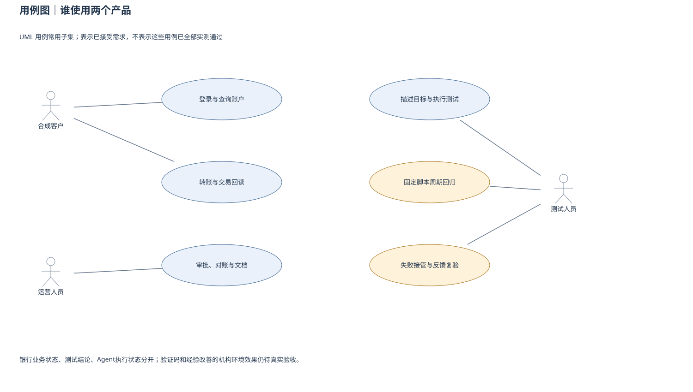
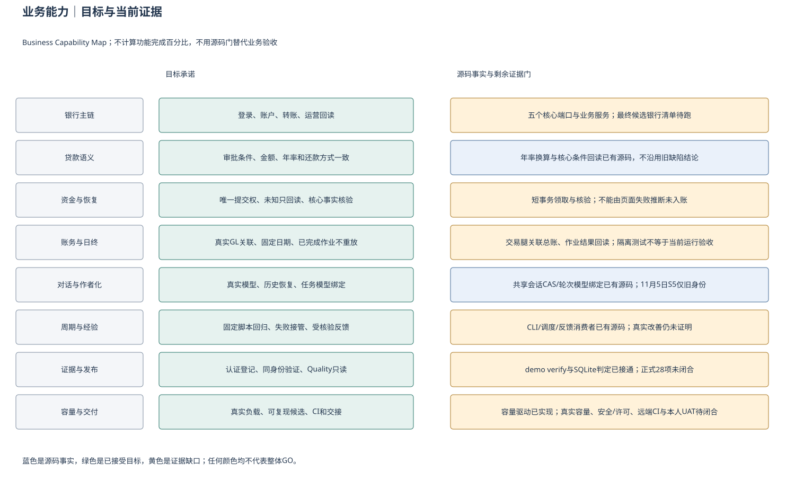
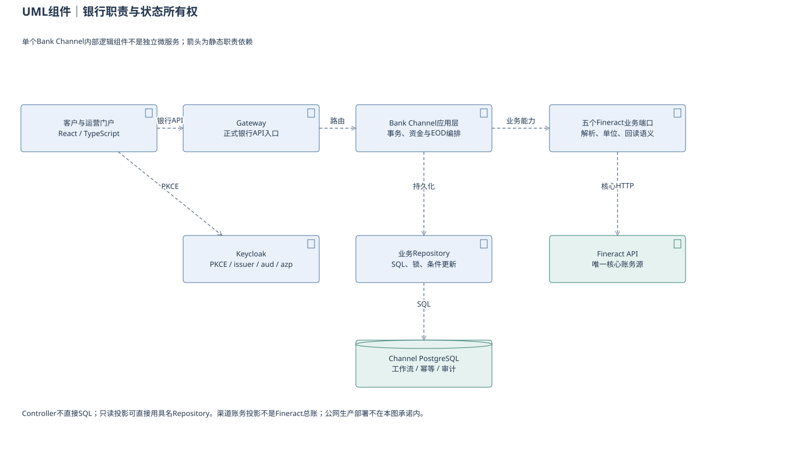
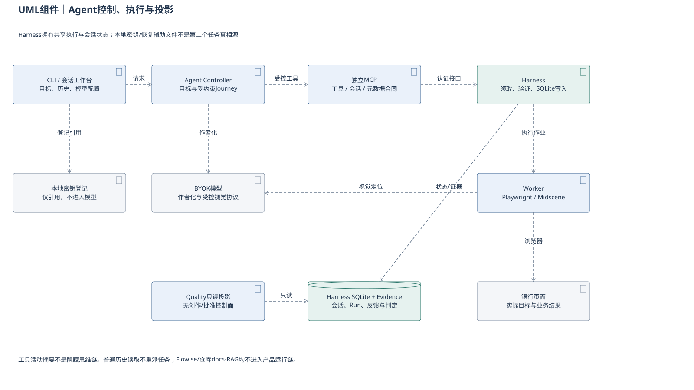
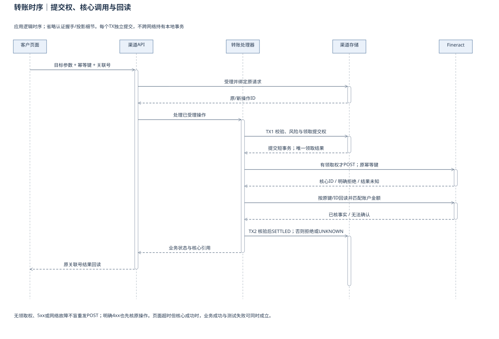
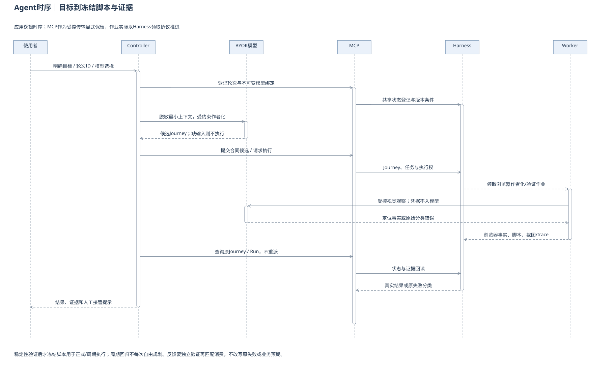
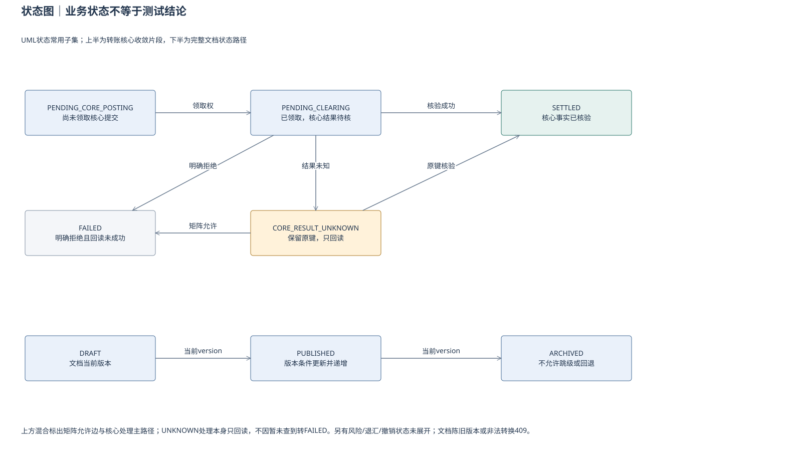
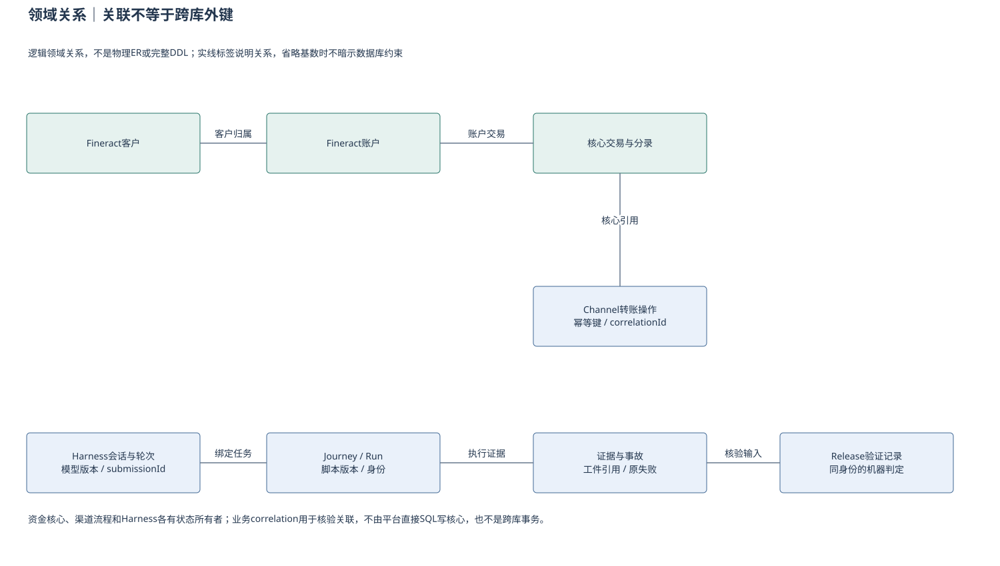
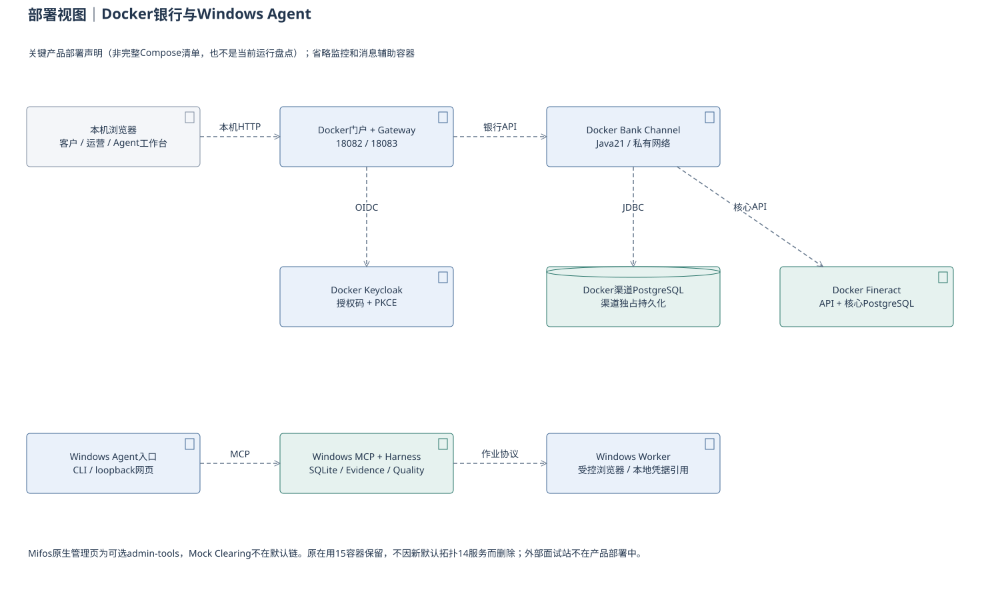
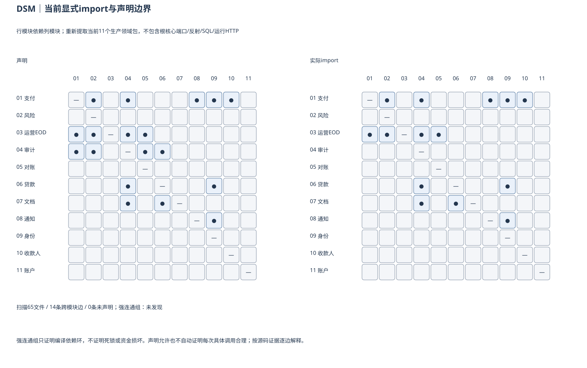

用例图｜谁使用两个产品
UML 用例常用子集；表示已接受需求，不表示这些用例已全部实测通过

业务能力｜目标与当前证据
Business Capability Map；不计算功能完成百分比，不用源码门替代业务验收

UML组件｜银行职责与状态所有权
单个Bank Channel内部逻辑组件不是独立微服务；箭头为静态职责依赖

UML组件｜Agent控制、执行与投影
Harness拥有共享执行与会话状态；本地密钥/恢复辅助文件不是第二个任务真相源

转账时序｜提交权、核心调用与回读
应用逻辑时序；省略认证握手/投影细节。每个TX独立提交，不跨网络持有本地事务

Agent时序｜目标到冻结脚本与证据
应用逻辑时序；MCP作为受控传输显式保留，作业实际以Harness领取协议推进

状态图｜业务状态不等于测试结论
UML状态常用子集；上半为转账核心收敛片段，下半为完整文档状态路径

领域关系｜关联不等于跨库外键
逻辑领域关系，不是物理ER或完整DDL；实线标签说明关系，省略基数时不暗示数据库约束

部署视图｜Docker银行与Windows Agent
关键产品部署声明（非完整Compose清单，也不是当前运行盘点）；省略监控和消息辅助容器

DSM｜当前显式import与声明边界
行模块依赖列模块；重新提取当前11个生产领域包，不包含根核心端口/反射/SQL/运行HTTP
